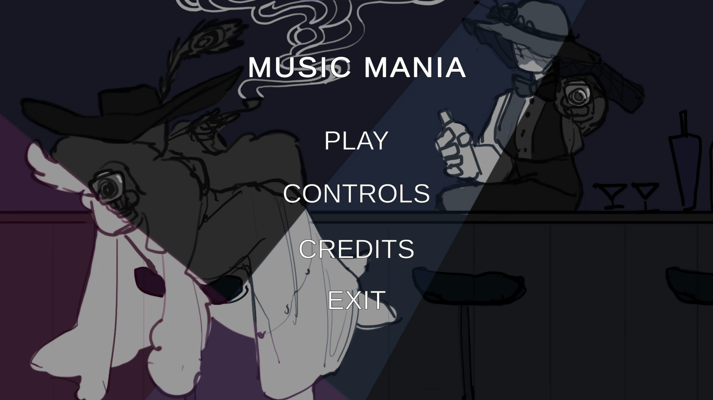
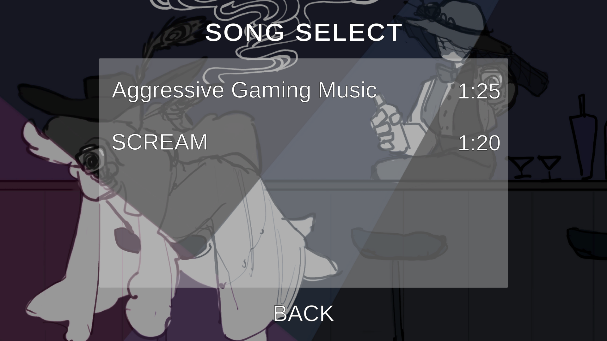
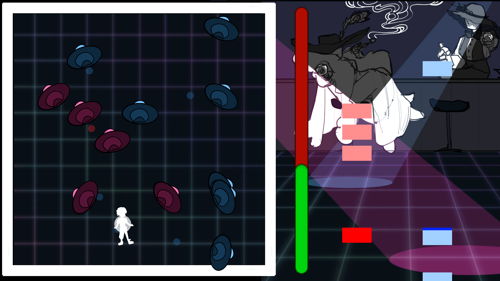

Description
Music Mania was developed for the GMTK Game Jam 2021. The theme for the jam was "Stronger Together," and I and my team
thought it would be a fun opportunity to combine two of the most focus-intensive game genres, being bullet-hells and rhythm games,
into one extremely difficult game - the strongest game, if you will. On one side of the screen, the player is attempting to dodge
various bullets coming after the player, and on the other side, is playing notes to the beat of the music that can destroy enemies
on the bullet-hell side. The player needs to survive until the end of the song to win.
Details
Engine: Unity (2D)
Programming Language: C#
Role: Programmer, Designer
Contributions
Developed charting tool for rhythm games to convert text files into note objects
Created judgment bar functionality
Integrated art assets
Implemented UI functionality
The Process
Development for the game took place over a 48 hour period. A few friends wanted to help out but could
only help for a few hours on either the first or second day, so I ended up implementing most of the
functionality apart from the bullet-hell.
For the rhythm game side of things, I had started by making sure the keys lined up to the judgment bar,
and made spawnable note objects. I then developed the tool for taking text files and converting them into
timed note spawns which took the longest amount of time. I developed a basic UI and song selection, and then finally,
with the help of a few friends, we charted the two songs for the game and submitted just a few minutes prior to the
48-hour deadline.


